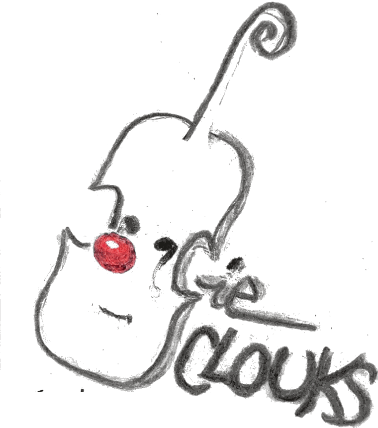
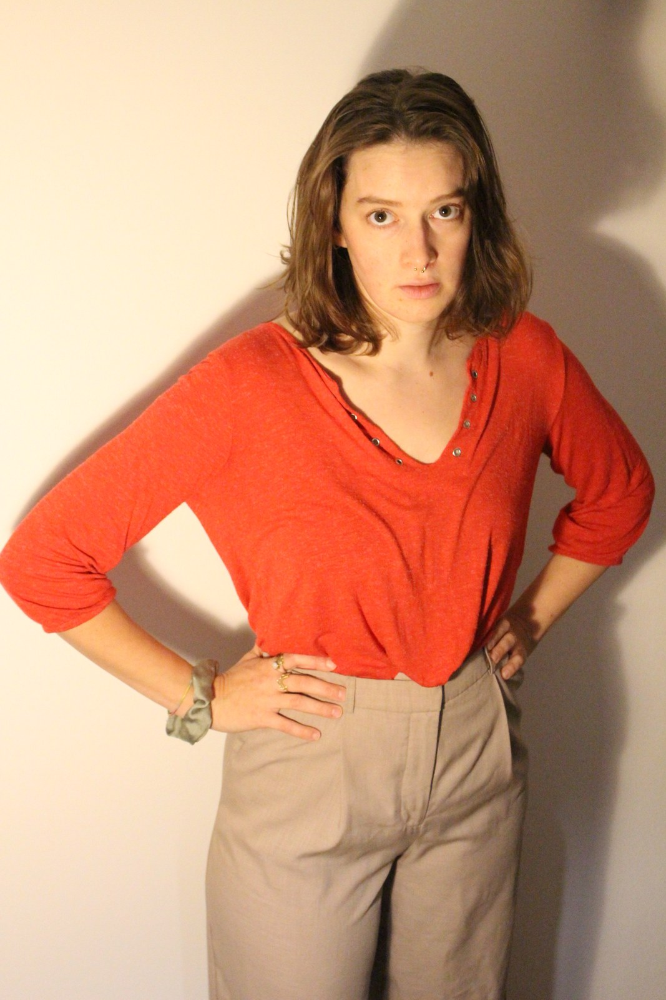

La Compagnie
« Clouks », c'est le gloups du vide et du doute, le clac de la précision et de l'élan — et le tout sans signification précise, car dans les créations de cette jeune compagnie le corps parle avant les mots, et une interjection suffit parfois à créer du sens.
Fraîchement née à Genève, cette compagnie de théâtre physique aime faire feu de tout bois. Elle se nourrit actuellement du clown, du jeu masqué, du bouffon et de la musique.
Elle écrit à partir de l'expérience du plateau, en faisant souvent émerger la matière et le propos au fil des rencontres avec le public.
Un théâtre engagé, un brin absurde, poétique et vivant, pensé pour rassembler, créer des émotions, évoquer des situations et ébranler certaines certitudes.


Artiste récurrente
Clara Urio
Jeu & Écriture
Après avoir étudié la musique au Conservatoire Populaire de Genève et participé à divers projets de théâtre amateur, Clara s'est formée à l'École Internationale de Théâtre LASSAAD à Bruxelles (2021–2023).
Titulaire d'un Bachelor en littérature et anthropologie (Université de Neuchâtel, 2021), cette jeune artiste pluridisciplinaire nourrit ses créations d'une réflexion sur les comportements humains et les dynamiques sociales.
Elle se perfectionne dans le jeu clownesque et bouffonesque auprès d'Alexandre Bordier, Gabriel Chamé Buendia et Hélène Vieilletoile, et explore le jeu masqué avec Omar Porras. Depuis 2023, elle expérimente le clown en solo, sur scène et dans l'espace public, où elle affine son jeu et puise la matière de ses écritures. En 2025, elle co-fonde à Genève Impro Clown, un format mensuel d'improvisations clownesques réunissant différents artistes.
Musicienne dès l'enfance, Clara a étudié le violon au Conservatoire de Genève, la rythmique et l'improvisation à l'Institut Jaques-Dalcroze, et le violon-jazz au Conservatoire de Neuchâtel. Ce bagage nourrit ses collaborations scéniques, notamment dans Hapax ou la Comparution immédiate (Festival de la Bâtie 2025), où elle est à la fois musicienne et comédienne. Son travail mêle ainsi théâtre et musique, dans une recherche clownesque du jeu.
Le comité
- Éléonore GürPrésidente
- Lucie MintenTrésorière
- Alice ArifSecrétaire
Éléonore est diplômée d'un Master en anthropologie et dramaturgie à l'Université de Neuchâtel, avec un mémoire sur le théâtre de rue qui explore les enjeux et les possibilités de ce domaine artistique. Présidente durant deux ans de la troupe universitaire de Neuchâtel (THUNE), elle y a enrichi sa pratique théâtrale, puis l'a poursuivie à travers les Activités culturelles de l'Université de Genève, ainsi que des stages professionnels de clown, auprès d'Hélène Vieilletoile et de Gabriel Chamé Buendia, et de théâtre avec Serge Martin.
Galerie
Sur scène
et dans la rue
Contact